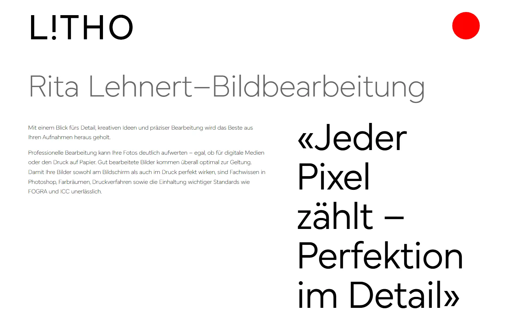

ueber-mich.txt

Matteo Lehnert
Ich bin im vierten Lehrjahr bei Sunrise in Zürich und arbeite mit Routern und Linux-Servern.
Seit August 2023 mache ich die Lehre als Informatiker EFZ mit Fachrichtung Plattformentwicklung. Mich interessiert Netzwerktechnik auf allen Layern, vom Kabel bis zum Routing. Im Herbst 2026 war ich für ein Praktikum einen Monat in Stockholm, bei Nrlyze.
Nebenbei baue ich Websites, zum Beispiel litho.ch. Ausserhalb der Arbeit trainiere ich MMA und Kraft, und ich laufe Langstrecke.
- Ort
- Zürich
- Jahrgang
- 2007
- Lehrabschluss
- Sommer 2027
- Sprachen
- Deutsch, Englisch
firewall-umzug
Firewall-Umzug in der Cloud
Sechs Server sollten hinter eine OPNsense-Firewall. Ich habe die Produktion in einer Sandbox nachgebaut und den Umzug dort in Etappen durchgespielt; das Runbook für die Produktion stammt auch von mir.
- Die Sandbox wird mit Terraform und Ansible so aufgebaut, wie die Produktion heute aussieht. Die Skripte brechen ab, sobald sie auf ein anderes Projekt zeigen.
- Das ganze Regelwerk (Firewall, NAT, DNS und Security Groups) passt für das Review auf ein paar Seiten.
- Für die Kunden-VPNs habe ich ein separates Gateway vorgeschlagen: Jeder Tunnel läuft in einem eigenen Container und wird mit Ansible ausgerollt.
litho.ch

litho.ch
Website für LiTHO, Bildbearbeitung und Lithografie in Zürich. Im Portfolio zeigt ein Schieberegler bei den Retuschen das Bild vorher und nachher.
- Portfolio mit Rasteransicht und Detailseiten, dazu eigene Seiten für Service, Making-of und About.
- Kontaktformular über EmailJS mit reCAPTCHA gegen Spam. Ein eigener Mailserver ist nicht nötig.
- Sitemap und Meta-Tags für die Suche, Impressum und Datenschutz als eigene Seiten.
smart-fridge
Smart Fridge
Kameras im Kühlschrank fotografieren den Inhalt, ein eigenes YOLO-Modell zählt die Bananen. Liegen nur noch zwei da, schickt AWS eine SMS.
- Die Kameras laufen mit Akku: aufwachen, Foto machen, hochladen und dann vier Stunden Deep Sleep.
- Die Haupt-Kamera spannt ein eigenes WLAN auf und schickt die Bilder durch einen WireGuard-Tunnel ins Homelab.
- Dort zählt das Modell die Bananen. Eine Lambda-Funktion prüft den Bestand in DynamoDB, SNS verschickt die SMS.
werdegang.log
Seit 2023
Informatiker EFZ Plattformentwicklung
Sunrise, Zürich
Basislehrjahr mit überbetrieblichen Kursen am Berufsbildungscenter. Danach im IP-Transport, mit Routing auf Cisco, Huawei und Juniper, und in der Unix-Abteilung mit Red Hat und Ansible.
Sep bis Okt 2026
Praktikum als Software Developer
Nrlyze, Stockholm
Ein Monat über Erasmus+. Cloud-Infrastruktur mit OpenStack, Terraform und Ansible, dazu der Firewall-Umzug.
Seit 2023
Berufsfachschule
BBW Berufsbildungsschule Winterthur
Module zu Netzwerk, Servern, Cloud und Sicherheit. Qualifikationsverfahren im Sommer 2027.
Netz
- Cisco IOS
- Huawei VRP
- Juniper Junos
- BGP, OSPF, MPLS
- VLAN, DHCP, DNS
- WireGuard, OPNsense
Server
- Red Hat, Debian, Ubuntu
- Ansible
- Terraform, OpenStack
- Docker, Proxmox
- Apache, Nginx
- AWS
Code
- Python
- Bash
- Git
- JavaScript, React
- C++ für ESP32
Kontakt
Am schnellsten erreichst du mich per Mail.
matteolehnertueber-diese-seite.txt
Wie diese Seite entstanden ist
Die erste Version war eine einfache Seite in Blau mit Lebenslauf. Für Version 3 wollte ich etwas Eigenes: einen alten Computer, den man einschaltet, und dahinter einen Desktop, auf dem man sich durchklickt.
Gebaut habe ich sie zusammen mit Claude Code, einem KI-Assistenten im Terminal. Ich habe die Richtung vorgegeben, Entwürfe verworfen und Rückmeldungen gegeben; Claude hat den Code geschrieben und im Browser getestet. Bis zu dieser Version brauchte es acht Runden.
- Drei Seiten waren das Vorbild: tommybiglow.com für den Aqua-Look und den Zoom in den Bildschirm, madebyigor.com/lab für die Liste links mit Zähler, ivan.technology für die generativen Grafiken. Ihren JavaScript-Code haben wir mit dem Reverse-Engineering-Werkzeug rea untersucht und die Shader von Hand gelesen. Übernommen sind Ideen und Zahlenwerte, keine Bilder.
- Die Seite ist reines HTML, CSS und JavaScript ohne Framework. Das Netz im Hintergrund zeichnet ein Canvas, das Porträt ein eigener WebGL-Shader, und die Schemas bei den Projekten sind ebenfalls Canvas.
- Die Screenshots von litho.ch kommen aus einem Edge ohne Fenster, gesteuert über das DevTools-Protokoll. Bilder wurden mit ffmpeg verkleinert und als WebP gespeichert.
Foto iMac G3: True Tech Talk Time, CC BY-SA 4.0. Schriften: Geist, Geist Mono und Instrument Serif, SIL Open Font License.